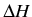

Con las herramientas que hemos estado manejando ya estamos preparados para modelar proteínas. En este contexto modelar significa hacer una predicción de cómo se disponen los átomos de una proteína conocida su secuencia, con el fin de estudiar su función molecular, su historia evolutiva o, si el modelo es bueno, diseñar o muestrear ligandos e incluso calcular sus afinidades (Singh & Dominy, 2010). Asimismo este tipo de modelos se usan mucho para estudiar el efecto de mutaciones puntuales (Kellogg et al., 2011).
Esta metodología se llama modelado comparativo o por homología y se describe en profundidad en este artículo de Fiser & Sali (2003). Hay fundamentalmente dos estrategias, que en general requieren alineamientos entre la secuencia problema y los posibles moldes:
El algoritmo genérico de modelado comparativo puede dividirse en varios pasos, ilustrados en la figura 5.7:
El paso 2 es el más determinante sobre la calidad del modelo y de hecho marca el techo de precisión de la metodología (Contreras-Moreira et al., 2005). Es además un paso crítico en el sentido de que si el alineamiento  es malo, el modelo resultante será malo, como ya vislumbramos en la sección 5.1. Para modelos complicados será necesario explorar diferentes combinaciones de moldes y alineamientos para encontrar la mejor solución.
Con el objeto de explicar en mayor detalle el algoritmo, el siguiente código implementa los pasos 3.1 y 3.2, quizás
los más fundamentales tras el el paso 2. El programa usa como ejemplo secuencias
y estructuras ya utilizadas en el apartado 5.1 (1gd6.pdb):
#!/usr/bin/env python
""" prog3.3 Construye un modelo sin gaps ni rotameros una secuencia problema (query)
en base a las coordenadas del model (pdb2) en base a un alineamiento.
Genera un fichero PDB con el modelo comparativo resultante."""
__author__ = 'Bruno Contreras-Moreira'
from math import exp
# 0) parametros del algoritmo:
query = { 'align':'KVFERCELARTLKRLGMDGYRGISLANWMCLAKWESGYNTRATNYNAGDRSTDYGIFQIN' +
'SRYWCNDGKTPGAVNACHLSCSALLQDNIADAVACAKRVVRDPQGIRAWVAWRNRCQNRDVRQYVQGCGV' };
molde = { 'file':'./files/1gd6.pdb',
'align':'KTFTRCGLVHELRKHGFEEN---LMRNWVCLVEHESSRDTSKTNTNR-NGSKDYGLFQIN' +
'DRYWCSKGASPG--KDCNVKCSDLLTDDITKAAKCAKKIYKR-HRFDAWYGWKNHCQG--SLPDISSC--' };
# 1) subrutinas
def lee_coordenadas_PDB(filename):
""" Devuelve una lista de residuos, cada uno con las coordenadas de sus atomos.
Ejemplo de linea en formato PDB:
ATOM 42 CA PHE X 3 6.981 22.274 18.887 1.00 6.72 """
coords = []
pdbfile = open(filename,'r')
try:
res,prev_resID = '',''
for line in pdbfile:
if(line[0:3] == 'TER'): break
if(line[0:4] != 'ATOM'): continue
resID = line[17:26]
if(resID != prev_resID):
if(res != ''): coords.append(res)
res = line
else: res += line
prev_resID = resID
if(res != ''): coords.append(res)
finally:
pdbfile.close()
return coords
def copia_coords_alineadas(align1,align2,coords_molde,PDBname):
""" Devuelve:
1) una lista con las coordenadas de coords_molde
que se pueden copiar segun el alineamiento align1,align2.
2) una estimacion del RMSD segun la curva RMSD(A) = 0.40 e^{l.87(1-ID)}
de Chothia & Lesk (1986) """
aanames = { "A":"ALA","C":"CYS","D":"ASP","E":"GLU","F":"PHE","G":"GLY",
"H":"HIS","I":"ILE","K":"LYS","L":"LEU","M":"MET","N":"ASN","P":"PRO",
"Q":"GLN","R":"ARG","S":"SER","T":"THR","V":"VAL","W":"TRP","Y":"TYR" }
rmsd,identical = 0,0
total1,total2,total_model = -1,-1,0
length = len(align1)
if(length != len(align2)):
print "# copia_coords_alineadas: alineamientos tienen != longitud",
return []
pdbfile = open(PDBname, 'w')
print >> pdbfile, "HEADER comparative model\nREMARK alignment:\n",
print >> pdbfile, "REMARK query : %s\n" % (align1),
print >> pdbfile, "REMARK template: %s\n" % (align2),
for r in range(0, length):
conserved = False
res1 = align1[r:r+1]
res2 = align2[r:r+1]
if(res1 != '-'): total1+=1
if(res2 != '-'): total2+=1
if(res1 == '-' or res2 == '-'): continue # salta los gaps
total_model += 1.0;
if(res1 == res2):
conserved = True
identical += 1.0
for atomo in coords_molde[total2].split("\n"):
if(atomo == ''): break
if(atomo[12:16] == ' CA ' or atomo[12:16] == ' C ' or \
atomo[12:16] == ' N ' or atomo[12:16] == ' O ' \
or conserved):
print >> pdbfile, "%s%s%s%4d%s" % \
(atomo[0:17],aanames[res1],atomo[20:22],total1+1,atomo[26:])
print >> pdbfile, "TER\n",
pdbfile.close()
rmsd = 0.40 * exp(1.87*(1-(identical/total_model)))
identical = (identical/total_model)
return (total_model,identical,rmsd)
# 2) programa principal
molde['coords'] = lee_coordenadas_PDB( molde['file'] )
print "# total residuos en estructura molde : %s\n" % (len(molde['coords'])),
(long_modelo,identidad,rmsd) = copia_coords_alineadas(query['align'],
molde['align'],molde['coords'],'modelo.pdb' )
print "# archivo PDB = modelo.pdb longitud modelo (residuos) = %d \n" % long_modelo,
print "# identidad = %1.0f%% RMSD estimado = %1.2f ansgtrom\n" % (100*identidad,rmsd),
Como en otros campos de la biología computacional, el repertorio de software para modelar proteínas es muy extenso, y constantemente incluye nuevas herramientas que sustituyen a otras que envejecen. Un buen punto de partida para elegir la mejor solución son los rankings que actualiza cada dos años CASP, aunque probablemente los programas de modelado preferidos por los usuarios son probablemente SWISS-MODEL en la web y MODELLER como instalable.
En la práctica podemos hacer nuestros modelos por homología, con la opción de controlar todos los pasos del procedimiento, por medio del programa MODELLER (Sali & Blundell, 1993), disponible sin costo para usuarios académicos. El programa tiene múltiples posibilidades, pero en este ejemplo nos centramos en el caso más sencillo de cómo hacer un modelo a partir de un sólo molde o template , estimando su calidad del modelo por medio de la función DOPE (Shen & Sali, 2006):
ATOM
.ali con este formato, donde structureX es el molde, sequence es la secuencia problema o query
y los demás campos definen el rango de residuos alineados del template , y su resolución:
C; Alineamiento de muestra en formato PIR >P1;1PDB structureX:1PDB:1 :A:106 :A:nombre_template:: 1.90: AFVVTDNCIKCKYTDCVEVCPVDCFYEGPNFLVIHPDECIDCALCEPECPAQAIFSEDEVPEDMQEFIQLNAELA EVWPNITEKKDPLPDAEDWDGVKGKLQHLER* >P1;query sequence:query:::::::0.00: 0.00 AYVINDSC--IACGACKPECPVNIIQGS--IYAIDADSCIDCGSCASVCPVGAPNPED----------------- -------------------------------*
guion_nombre_template.py:
from modeller.automodel import *
log.verbose()
env = environ()
# 1) directorio donde se encuentran los ficheros con coordenadas de moldes/templates,
# con extension .pdb,.atm,.ent
env.io.atom_files_directory = './templates/'
# 2) prepara el modelado
a = automodel(env,
alnfile = 'alineamiento.ali', # fichero con el alineamiento
knowns = '1PDB', # nombre del template como aparece en alnfile
sequence = 'query', # nombre de secuencia problema como aparece en alnfile
assess_methods=(assess.DOPE))
a.starting_model= 1 # define cuantos modelos diferentes quieres
a.ending_model = 2
# 3) accion!
a.make()
$ mod9v8 guion_template.py y al terminar revisa
guion_nombre_template.log para comprobar la evaluación empírica del modelo o modelos obtenidos